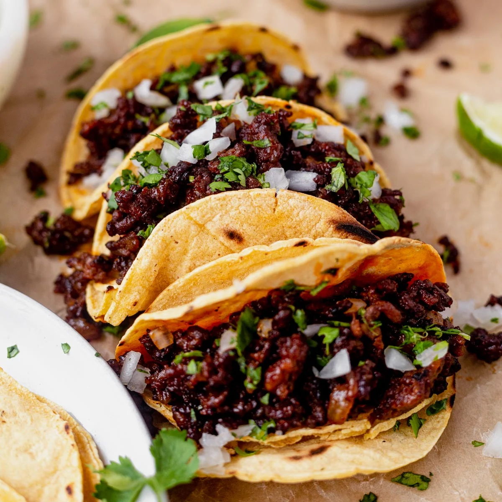

Tacos

Mexican Tacos
Tacos orginated from Mexico. However, despite their humble beginning tacos have taken the world by storm. Many cultures around the world
have inserted their own influence to create a wide variety of fusions with the food. But today we're looking at the original, you will find
a traditional taco recipe below.
- Start by choosing and cooking a selection of marinated protein. (ex: fajita, steak, chicken, etc..)
- After cooking, make sure to finely cut the protein.
- Cut up some onion and cilantro.
- Finally, put the protein along with the onion and cilantro on your choice of a flower or corn tortilla.
- Optionally, you can choose to add some lime juice or salsa to create a better experience.